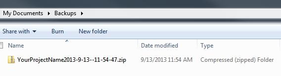
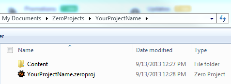
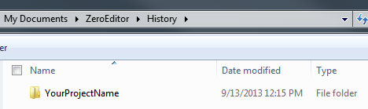
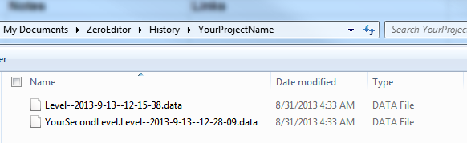
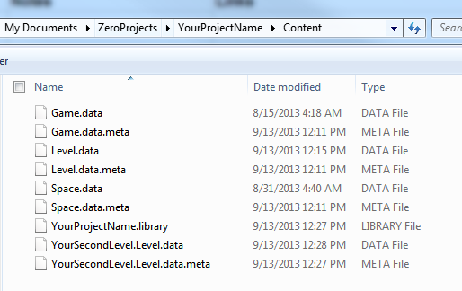

Recover Files
First and foremost, we highly advise you employ some form of source control such as SVN or Mecurial.
Barring source control, there are still some measures to reverting to older versions of your Zero Engine Project.
Make a Backup
If you can open your project, the first step to recovery is safeguarding your project from further damage:
- Open your project
- Enter the command: BackupProject
Using the BackupProject command creates a zipped folder of your project and its content on your computer.

If you can’t open your project, make a manual copy of your project’s folder in your operating system.
Your project folder’s default location is:
My Documents > ZeroProjects > YourProjectName
File Locations
Content Folder
The Content folder stores all the data needed to save the state of your project. When we recover files we’ll be replacing the ones in here. To find your content folder:
- Open your project
- Enter the command: ShowProjectFolder
This will open the your project’s folder on your computer, in there you should see the Content folder.

History Folder
When you save or run your project, the Zero engine makes a copy of the altered files in the Content folder to the History folder before the changes are applied.
Consider the Following:
You create a sprite and save the project. You then change the color of the sprite to green and run the project.
If you were to recover the most recent files from the History folder your sprite would still be the default color because the history only has previous versions.
Finding your History Folder:

Recover the File
Find the Appropriate File
In the History folder you’ll see files similar in name to those in your Content folder:
History Folder

Content Folder

Just like the Content folder, the History folder contains your collective Zero Project over multiple files. Because the data is only saved when there are changes, you
- may not find backups of all the files
- may find different date-time stamps on files even though they represent the same snapshot of the project
Tip
When looking for the more recent files, sort by name to help you correctly choose those files that are the most recent.
Rename the File
Once you know which file you need, create a copy in the History folder renaming it to match the corresponding file in the Content folder. For instance, take something like:
YourSecondLevel.Level--2013-9-13-12-28-09.data
and rename it to:
YourSecondLevel.Level.data
Save the File
Then cut this file and paste it into the Content folder, so it overwrites the one that is there.
Warning
Make sure the project you are recovering files for is closed at the time you overwrite the files in the Content folder.
Your project should now have that file recovered.